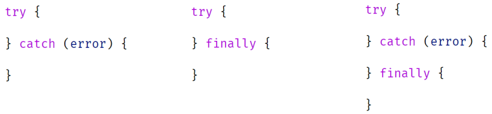

Винятки – несподівані події, що переривають нормальну роботу коду та виникають під час виконання сценарію.
Наприклад, спроба десеріалізувати об'єкт з рядка JSON, який містить помилку, призведе до виключення. Оскільки функція JSON.parse повинна повернути об'єкт, але не може цього зробити через неправильні вхідні дані, вона викидає виняток (генерує помилку), яка зупиняє подальше виконання сценарію. Якщо parse не може повернути дані, немає сенсу у виконанні подальшого коду, тільки якщо розробник не передбачає альтернативного алгоритму та опрацює виняткову ситуацію.
Обробка виключення здійснюється за допомогою ключових слів: try, catch, finally
Можливі конструкції у коді:
Якщо виняток генерується в коді, що знаходиться в блоці try, виняток припиняє виконання всіх наступних інструкцій у блоці try і переносить виконання в блок catch. При цьому інформація про помилку передається як параметр в блок catch. Після блоку catch сценарій продовжується. Якщо виняток виникає поза блоку catch — припиняється виконання всього сценарію.
Об'єкт винятку містить три основні властивості: name — назва виключення, message — опис помилки, що виникла і stack — список викликів, які призвели до виключення.
Приклади 001 - 004 з директорії js/1-15-exception-handling/examples
Finally — блок коду, який гарантовано виконується. Finally може слідувати відразу за блоком try або за блоком catch. Якщо під час виконання відбувається виняток у блоці try, спрацьовує блок catch і після цього виконується блок finally. Якщо у блоці try не відбулося виключення, блок catch ігнорується, але finally все одно виконується. Якщо у блоці catch відбудеться ще один виняток або до блоку finally виконається оператор return, блок finally все одно виконається.
Finally використовують для тих випадків, коли потрібно гарантувати виконання дії за будь-яких обставин. Наприклад, коли це операція, пов'язана зі звільненням ресурсів, виділених під час виконання блоку try.
Приклади 005, 006 з директорії js/1-15-exception-handling/examples
Throw оператор, який використовується для створення винятку.
Якщо цей оператор виконується в коді, створений виняток за стеком виклику передається до тих пір, поки не потрапить до блоку catch або поки не закінчаться адреси в стеку викликів.
Цей оператор має сенс використовувати для бібліотечних функцій, які використовуються в різних частинах програми та повинні повідомляти розробника про неправильне використання.
Приклади 007 - 008 з директорії js/1-15-exception-handling/examples
Для створення типу виключення, потрібно визначити новий клас і розширити один із системних класів винятків. За необхідністю визначити додаткові властивості та проініціалізувати властивості, отримані у спадок від класу батька.
Після ключового слова throw може використовуватися будь-який об'єкт або просте значення, яке буде виключенням. Але браузер та інструменти для роботи з винятками можуть дати більше інформації та будуть зручними у використанні, якщо об'єкт помилки буде похідним від вбудованого класу помилки
Приклад 10 з директорії js/1-15-exception-handling/examples